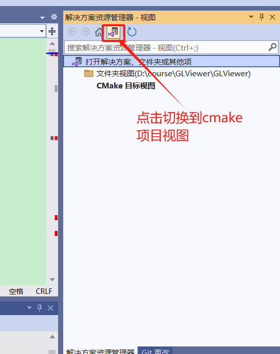
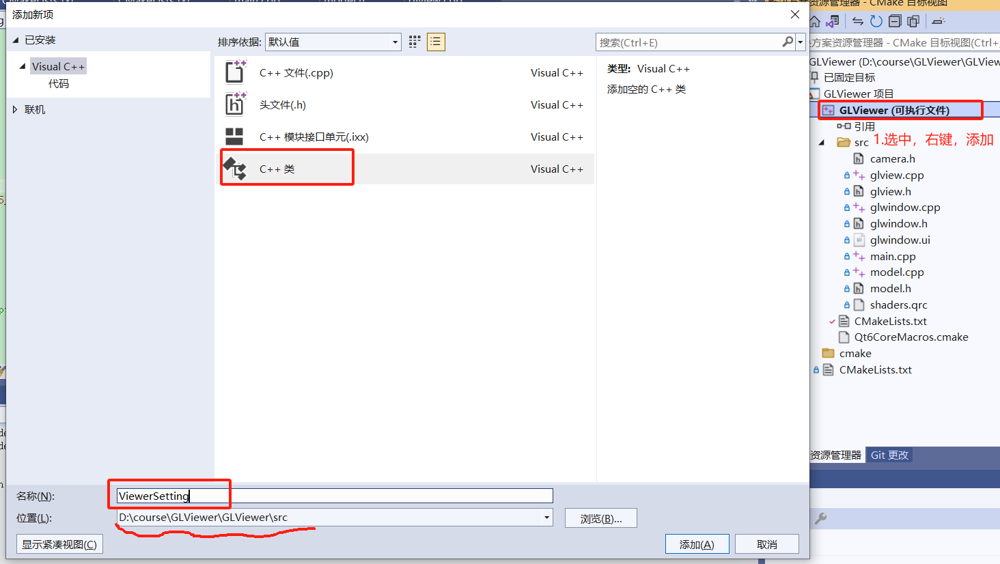
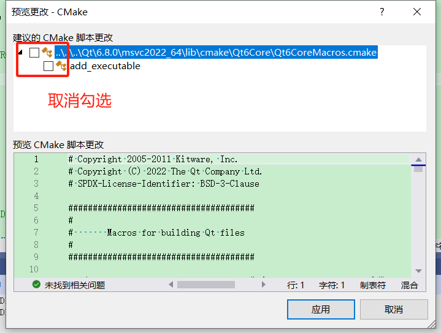
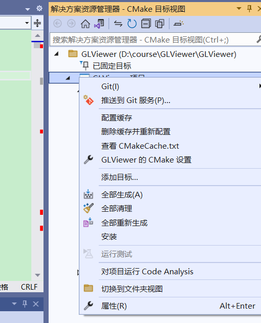
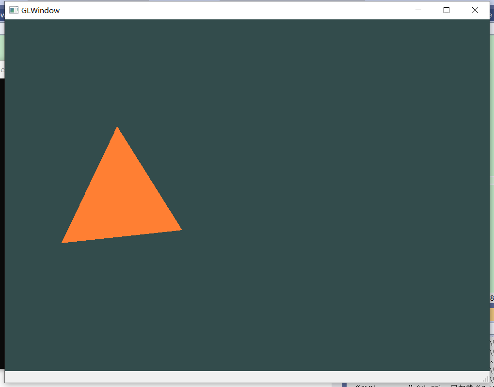

6.相机：引入Camera类
6.1.引入CGLib库
- 下载cglib：cglib.net
- 课程目录下新建
dependencies文件夹，将cglib库放进去；注意在.gitignore文件中添加如下两行，以忽略依赖库文件；
#dependencies
dependencies/
- 在
src目录下的cmakelists文件中的find_package后添加如下内容以使用CGLib库，
#CGLib
set(CGLib "${CMAKE_SOURCE_DIR}/../../dependencies/CGLib")
if(WIN32)
include_directories(${CGLib}/include)testFunc/lib)
link_directories(${CGLib}/bin/win64/Release)
link_libraries(CGLib.lib)
endif()
- 还有一件事，迟早得做，现在做了吧，把CGLib的dll和pdb文件拷贝到本项目的输出目录中（GLViewer.exe所在目录），默认是这里
out\build\x64-Debug\src，如果没有更改的话。
6.2.添加ViewerSetting类
获取当前客户端设备像素比，并进行适配。
补充：
设备像素比（devicePixelRatio）：指当前显示设备的物理像素分辨率与CSS像素分辨率之比。这个比值可以理解为像素大小的比率：一个CSS像素的大小与一个物理像素的大小。简单来说，它告诉浏览器应使用多少屏幕实际像素来绘制单个CSS像素。
- 在VS2022中切换到cmake项目视图， 

在弹出建议的cmake脚本更改建议窗体，我们取消即可，认真的同学应该明白个中缘由~

如果项目视图的src下没有出现新添加的ViewerSetting代码文件，可能因为cmake配置需要更新，点击配置缓存或删除缓存并重新配置,

在ViewerSetting.h中添加代码，并记得在cpp文件中定义。这是因为不同客户端屏幕的缩放比例可能不同，需要进行适配，
class ViewerSetting
{
public:
// 适配不同客户端屏幕缩放比例
static float devicePixelRatio;
};
我们需要读取当前客户端的这个值并记录：在main.cpp中添加如下代码，
ViewerSetting::devicePixelRatio = QGuiApplication::primaryScreen()->devicePixelRatio();
#include <QApplication>
#include <QGuiApplication.h>
#include <QScreen.h>
#include "glwindow.h"
#include "ViewerSetting.h"
int main(int argc, char *argv[])
{
QApplication a(argc, argv);
ViewerSetting::devicePixelRatio = QGuiApplication::primaryScreen()->devicePixelRatio();
GLWindow w;
w.show();
return a.exec();
}
恭喜你，添加成功，但可能编译报错哦，我们使用了QT的Gui库，可能找不到，我们还需要更新下cmakelists文件对应位置添加如下脚本代码，
find_package(Qt6 REQUIRED COMPONENTS Gui)
target_link_libraries(GLViewer PRIVATE Qt6::Gui)
注意：
记得编译一下，确保通过；
6.3.添加ViewerUtils类
// ViewerUtils.h
#pragma once
#include "CGUtils/CGUtils.h"
using namespace CGUTILS;
class ViewerUtils
{
public:
// 返回6个坐标轴（包含正负轴）中与dir最贴近的轴
static Vector3f normalizeToAxis(const Vector3f& dir, const Vector3f& localX, const Vector3f& localY, const Vector3f& localZ);
};
// ViewerUtils.cpp
#include "ViewerUtils.h"
Vector3f ViewerUtils::normalizeToAxis(const Vector3f& dir, const Vector3f& localX, const Vector3f& localY, const Vector3f& localZ)
{
double angleX = localX.Angle(dir);
double angleY = localY.Angle(dir);
double angleZ = localZ.Angle(dir);
double rAng90 = PI / 2.0;
bool bTX = angleX > rAng90;
bool bTY = angleY > rAng90;
bool bTZ = angleZ > rAng90;
if (bTX)
angleX = PI - angleX;
if (bTY)
angleY = PI - angleY;
if (bTZ)
angleZ = PI - angleZ;
if (angleX < angleY && angleX < angleZ)
return bTX ? -localX : localX;
else if (angleY < angleX && angleY < angleZ)
return bTY ? -localY : localY;
else// if (angleZ < angleX && angleZ < angleY)
return bTZ ? -localZ : localZ;
}
聪明的你已经发现，我们也成功使用了此前引入的CGLib库~
6.4.添加camera.h
直接将camera.h文件复制到src下，或者用上述添加类的办法添加camera.h，然后复制代码进去。
确保编译通过，如果不通过就解决问题，直到通过，解决问题的办法很多，比如看本课程系列对应视频，教程文档，或者搜索，或者在群里问......
然后来到了本节课程的重头戏部分，使用camera吧~
- 在
GLView类中添加Camera成员字段，
Camera m_camera = Camera(this, QVector3D(0.0f, 6.0f, 10.0f));
- 在
GLView.cpp中initializeGL函数实现中添加如下代码，更新时间，
m_camera.lastFrame = QTime::currentTime().msecsSinceStartOfDay() / 1000.0;
- 在
resizeGL函数实现中添加如下代码，每次窗口尺寸变化都会更新，注意我们偷偷添加了glViewport调用，是为了让渲染管线正常工作，想起来了没？在处理为标准化设备坐标后，需要通过视口变换映射到屏幕像素上。
glViewport(0, 0, w, h);
m_camera.SCR_WIDTH = w;
m_camera.SCR_HEIGHT = h;
- 我们来到了
paintGL函数实现，首先添加如下代码，更新每个渲染循环的时间间隔deltaTime，
float currentFrame = QTime::currentTime().msecsSinceStartOfDay() / 1000.0;
m_camera.deltaTime = currentFrame - m_camera.lastFrame;
m_camera.lastFrame = currentFrame;
如果你这几天睡得足，那么你应该记得我们此前设置的view-matrix和projection-matrix为单位矩阵，那是临时的，赋予它意义的时刻到了，
m_projectionMat.setToIdentity();
m_projectionMat.perspective(/*qDegreesToRadians*/(m_camera.Zoom), (float)m_camera.SCR_WIDTH / (float)m_camera.SCR_HEIGHT, 0.1f, 100.0f);
m_viewMat = m_camera.GetViewMatrix();
- 嗯？应该是鼠标控制相机的运转呀，对的，我们一起来实现~
重写
event函数，让camera捕获鼠标、键盘事件，嗯，至于怎么处理是它的事情了，
// GLView.h
virtual bool event(QEvent* e);
// GLView.cpp
bool GLView::event(QEvent* e)
{
makeCurrent();
if (m_camera.handle(e))
update();
doneCurrent();
return QWidget::event(e);
}
如果正常的话，你可以通过鼠标操作相机，试着按住鼠标左键转动、按住鼠标右键移动、滚动鼠标滚轮，你会看到不同的效果~

思考：
为什么鼠标在三角形上左键旋转时，没有以此为旋转中心呢？
我们回顾下本节所作的事情，添加相机，并在GLView中去使用调用它，至于其它事情都是围绕这个目的展开的。
提示：
作者在视频课程中对相机原理和实现有详细的讲解，包括原理和代码逻辑，欢迎观看。